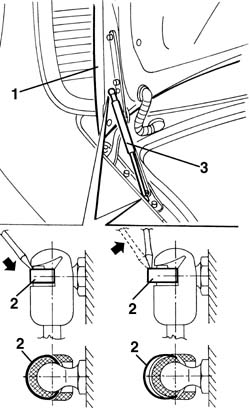

1070B26 l/h or r/h boot lid lift device (one) - r+r
- Path
- Procedures > 70 FITTINGS > 7025 COMPARTMENT LIDS > 7025B boot lid > 1070B26 l/h or r/h boot lid lift device (one) - r+r
- Kind
- repair procedure (removal / refitting; the operation number is the code)
- Applies to
- all engines; all production periods
- Interactive page
- https://sloeber94.github.io/elrnDB-a156/en/#/3238736
Applies to: all engines; all production periods
 Removing
Removing
 Refitting
Refitting1. Open the boot lid and support it.
2. Move the stop springs (without removing them) from both ends with a screwdriver.
3. Remove the lifting device.

Applies to: all engines; all production periods
Refitting
RemovingCheck that the lifting device is not damaged.
Reassemble the lifting device by pressing the ends in the anchor pins.
Insert the stop springs in both ends.
Check the function of the lifting device.